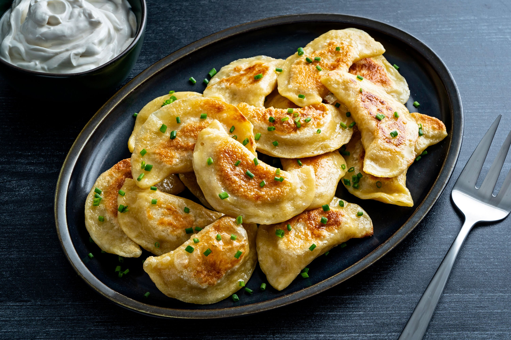

Ukrainian Pierogi

Description
Potato Vareniki (Ukrainian Pierogi Recipe) are one of the best and most comforting Eastern European dishes. Stuffed with mashed potatoes and wrapped in homemade dough, they are easy to love by both adults and kids!
This Ukrainian pierogi recipe features fluffy and creamy mashed potatoes stuffed inside a homemade dough. The pierogies are quickly boiled and served with plenty of sour cream, caramelized onions, and dill on top. It is the ultimate comfort food!
Ingredients
Dough:
- 5 cups all-purpose flour
- 1 teaspoon salt
- tablespoon butter, softened
- 1 cup evaporated milk
- ½ cup water
Filling:
- 6 medium potatoes, cut into small cubes
- 2 large onions, finely chopped
- ½ cup butter
- 1 cup shredded Cheddar cheese
- salt and pepper to taste
Alternative filling:
- 1 pound sauerkraut
- 2 large onions, finely chopped
- ½ cup butter
- 3 cups finely shredded green cabbage
- 1 cube chicken bouillon
- 2 teaspoons pepper
Steps
- To make the dough, combine the flour and salt in a large bowl. Make a well in the center and add the soft butter and evaporated milk; stir gently until all the liquid is absorbed. Add water only as needed, kneading continuously until dough sticks together. Place dough into a greased bowl, turn to coat, and let rest for 30 minutes.
- To make the potato filling, place potatoes into a saucepan with water to cover. Bring to a boil and cook until tender, about 10 minutes. Drain and set aside. Melt 1/2 cup butter in a medium skillet, over medium heat. Saute onions in butter until tender. Mix the onions into the potatoes along with the cheese and season with salt and pepper to taste.
- To make the sauerkraut and cabbage filling, pour the drained sauerkraut into a large saucepan. In a medium skillet, saute 2 onions in 1/2 cup butter until tender, about 5 minutes. Stir the onions into the sauerkraut along with the cabbage and chicken bouillon cube. Cook over low heat until liquid evaporates. Season with pepper and remove from heat. Allow the mixture to cool, then run through a grinder or food processor.
- Remove the dough from the bowl onto a lightly floured surface. Roll out to 1/8 inch in thickness. Cut into 3 inch circles. Place one tablespoon of filling onto one side of the circle. Fold the other half over and press the edges to seal. Place finished dumplings onto a floured tray and keep covered.
- Bring a large pot of water to a boil. Drop 10 or so dumplings into the water at a time. Cook for 3 to 5 minutes, then remove to a colander to drain. Place finished dumplings onto a lightly oiled dish and turn them to coat with a thin layer. This will keep them from sticking together. Serve dumplings with fried onions and sour cream. Cooled dumplings also can be fried in oil and butter for a nice crispy surface.
Nutrition Facts
Servings Per Recipe: 10
Calories: 636
- Total Fat: 28g
- Saturated fat: 17g
- Cholesterol: 76mg
- Sodium: 919mg
- Total Carbohydrate: 82g
- Dietary Fiber: 7g
- Total Sugars: 8g
- Protein: 16g
- Vitamin C: 45mg
- Calcium: 231mg
- Iron: 5mg
- Potassium: 908mg